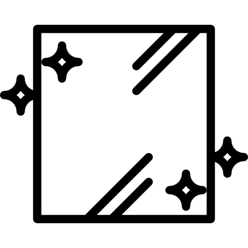

Saiba como selecionar os seus resíduos para você não deixar o seu lixo ir parar no mar.
A poluição dos oceanos é um dos maiores desafios ambientais da nossa era. Todos os anos, milhões de toneladas de lixo acabam nos mares, ameaçando a vida marinha e destruindo ecossistemas inteiros.
A mudança precisa começar dentro das nossas casas. A correta separação e destinação do lixo são atitudes simples que impedem que esses materiais cheguem aos oceanos, garantindo um futuro sustentável.
Praticamente todos são recicláveis, como caixas, papel laminado e jornais. Precisam estar limpos e secos.

Infinitamente reciclável, exceto lâmpadas, espelhos, cerâmica, óculos e pirex.
Enlatados, ferragens, canos e alumínio. Uma lata economiza energia para manter uma TV ligada por horas.
Quase tudo é reciclável, exceto adesivos e acrílico. 100 toneladas recicladas economizam 1 tonelada de petróleo.